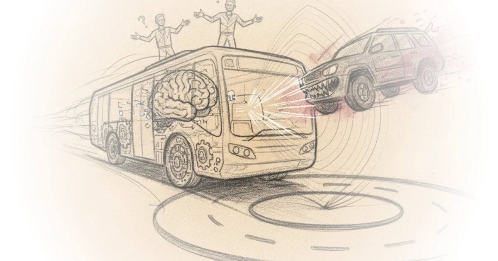

We tried London's first driverless bus Michael Macleod · London Centric ·Jul 11, 2026 · 12 min read · AI & Tech 
The teenage millionaire hacker from tower hamlets who took down TfL Michael Macleod · London Centric ·Jul 8, 2026 · 14 min read · AI & Tech
London's rental scammers have infiltrated the schemes meant to stop them Michael Macleod · London Centric ·Jul 4, 2026 · 10 min read · Housing & Cities
London's schools can't cope with the heat Michael Macleod · London Centric ·Jun 23, 2026 · 12 min read · Science
What's really going on at brixton market? Michael Macleod · London Centric ·Jun 20, 2026 · 10 min read · Housing & Cities
"Bring swords": The viral riot that didn't happen Michael Macleod · London Centric ·Jun 16, 2026 · 13 min read · AI & Tech
Harry potter shops raided after London centric investigation Michael Macleod · London Centric ·Jun 13, 2026 · 11 min read · Economics
Asif aziz's hotel and a "mystery" fire test Michael Macleod · London Centric ·Jun 9, 2026 · 12 min read · Housing & Cities
Lime axes speed limits for deliveroo riders Michael Macleod · London Centric ·Jun 2, 2026 · 12 min read · Housing & Cities
“I could have killed someone”: The story of the stratford westfield chair-throwing video Michael Macleod · London Centric ·May 24, 2026 · 11 min read · Law & Rights
Another fundraiser outside London stations is under investigation Michael Macleod · London Centric ·May 13, 2026 · 12 min read · Media
How the elections will change London Michael Macleod · London Centric ·May 9, 2026 · 12 min read · Political Strategy
Reform expels London candidates over bnp links Michael Macleod · London Centric ·May 6, 2026 · 12 min read · Political Strategy
Lion dissection in central London Michael Macleod · London Centric ·Apr 29, 2026 · 12 min read · Media
London's luxury car graveyard Michael Macleod · London Centric ·Apr 25, 2026 · 13 min read · Housing & Cities
Is your coffee being made by an unpaid trial shifter? Michael Macleod · London Centric ·Apr 8, 2026 · 11 min read · Economics
Fox hunting in king's cross Michael Macleod · London Centric ·Mar 23, 2026 · 10 min read · Housing & Cities
How would London's "range rover tax" work? Michael Macleod · London Centric ·Mar 16, 2026 · 12 min read · Housing & Cities
Why is there another tube strike? Michael Macleod · London Centric ·Mar 11, 2026 · 11 min read · Media
The "azizification" of London housing Michael Macleod · London Centric ·Mar 7, 2026 · 10 min read · Housing & Cities
"School wars": Moral panic or self-fulfilling prophecy? Michael Macleod · London Centric ·Mar 3, 2026 · 12 min read · Culture
Can sadiq khan stop asif aziz's mass evictions? Michael Macleod · London Centric ·Feb 27, 2026 · 11 min read · Culture
The billionaire philanthropist making hundreds of londoners homeless Michael Macleod · London Centric ·Feb 22, 2026 · 11 min read · Culture
The end of the noisy London pedicab Michael Macleod · London Centric ·Feb 18, 2026 · 12 min read · Culture